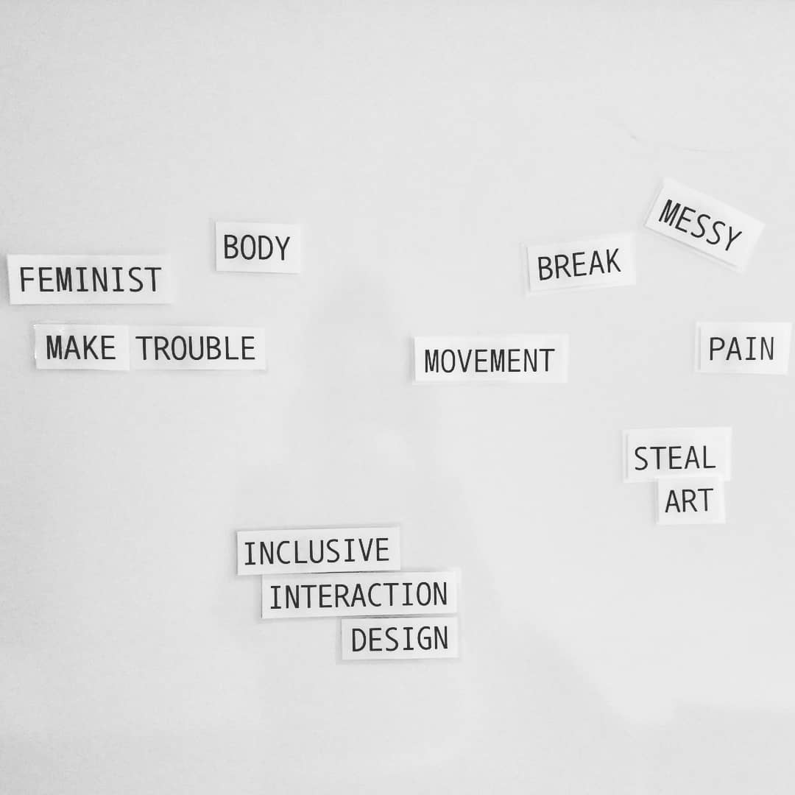

Research
During my master thesis I focused on the design of technologies to support the menstrual cycle. The work was then reiterated on and reframed as a research contribution proposing 'touch' as central to generating bodily knowledge.
I'm interested in working within a feminist HCI framework, and I'm curious to explore feminist post-humanities, speculative design, ethics/matters of care.
"Technology is not neutral. We’re inside of what we make, and it’s inside of us. We’re living in a world of connections — and it matters which ones get made and unmade." ― Donna J. Haraway, 1997.
Publications
Nadia Campo Woytuk, Marie Louise Juul Sondergaard, Marianela Ciolfi Felice, and Madeline Balaam. 2020. Touching and Being in Touch with the Menstruating Body.
Kristina Höök, Sara Eriksson, Marie Louise Juul Søndergaard, Marianela Ciolfi Felice, Nadia Campo Woytuk, Ozgun Kilic Afsar, Vasiliki Tsaknaki, and Anna Ståhl. 2019. Soma Design and Politics of the Body. In Proceedings of the Halfway to the Future Symposium 2019 (HTTF 2019).
Nadia Campo Woytuk, Linette Nilsson, and Mingxing Liu. 2019. Your Period Rules: Design Implications for Period-Positive Technologies. Extended Abstracts of the 2019 CHI Conference on Human Factors in Computing Systems. 2019.
